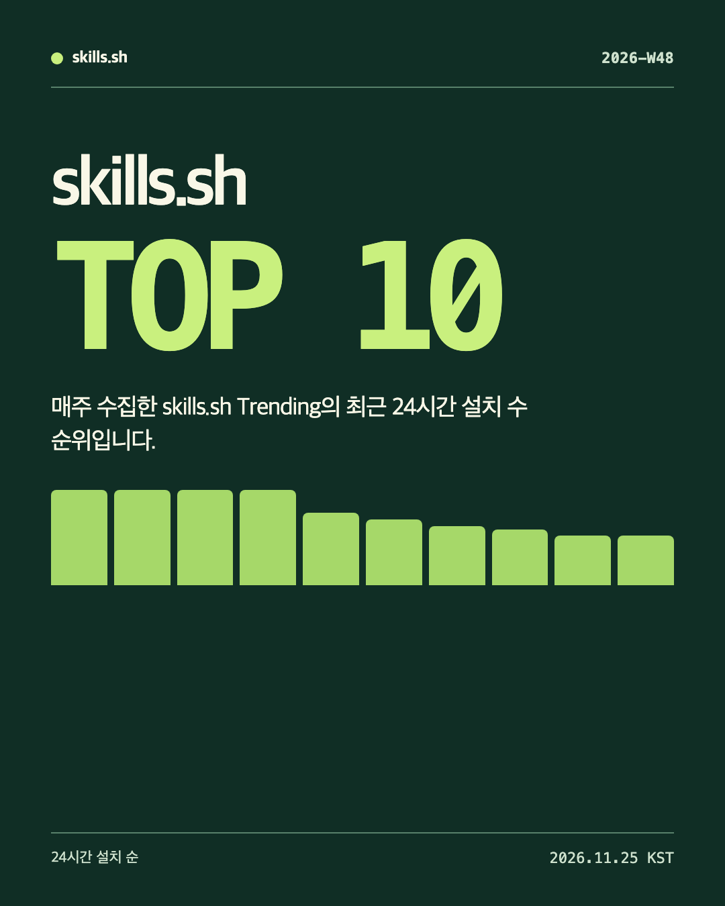
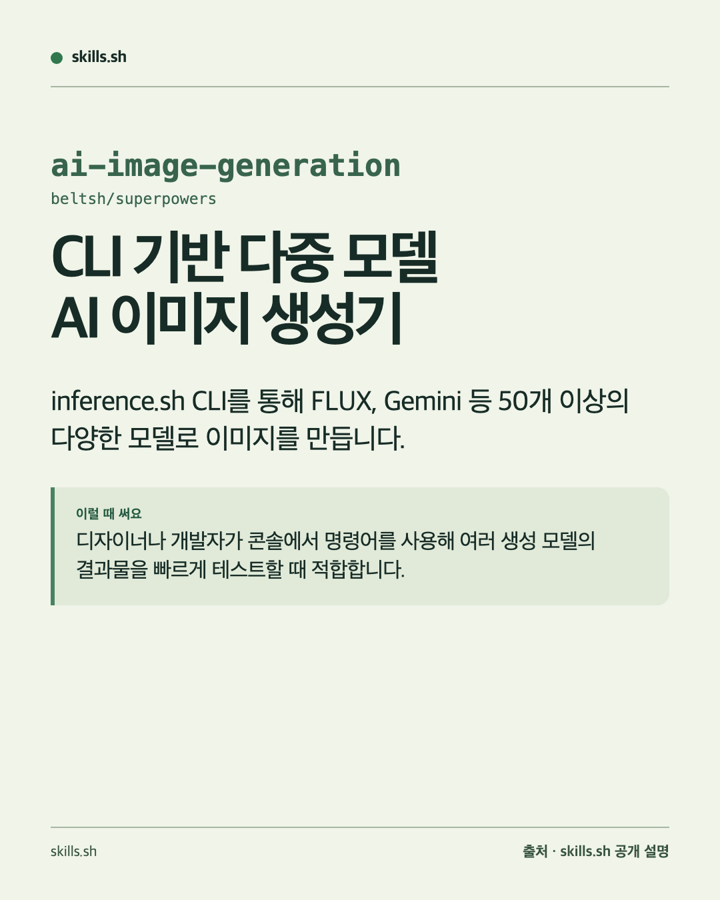
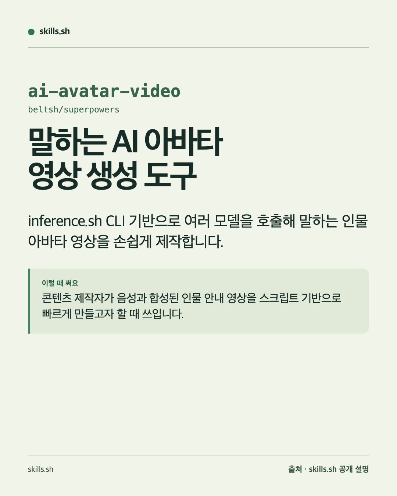
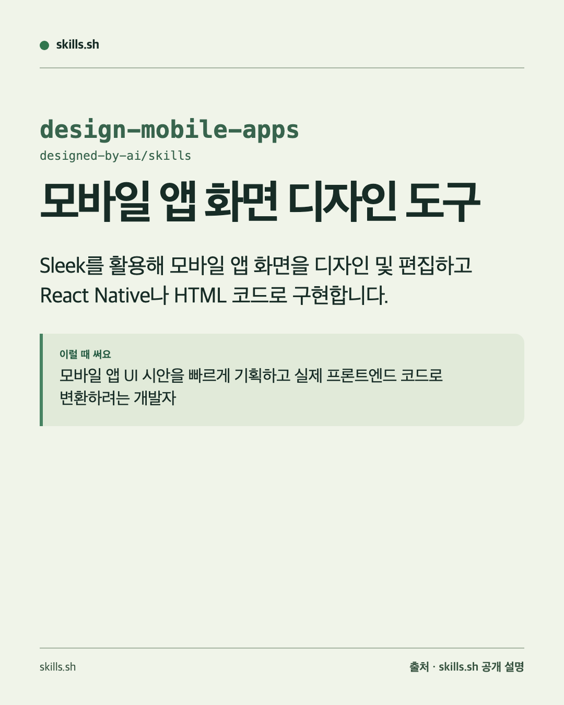
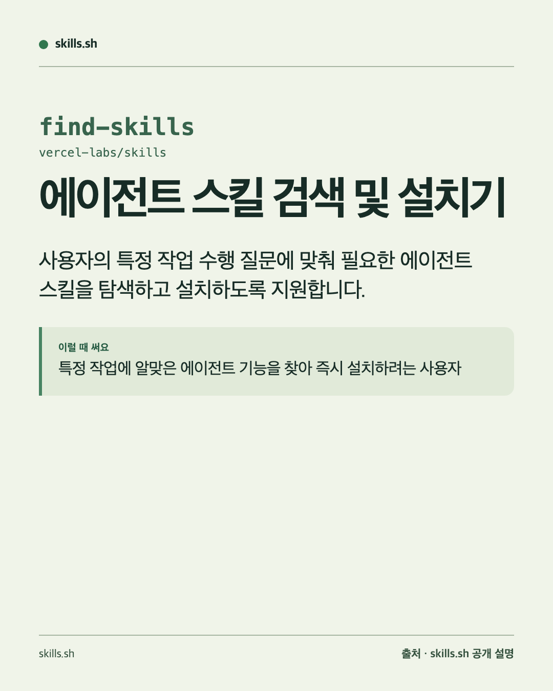
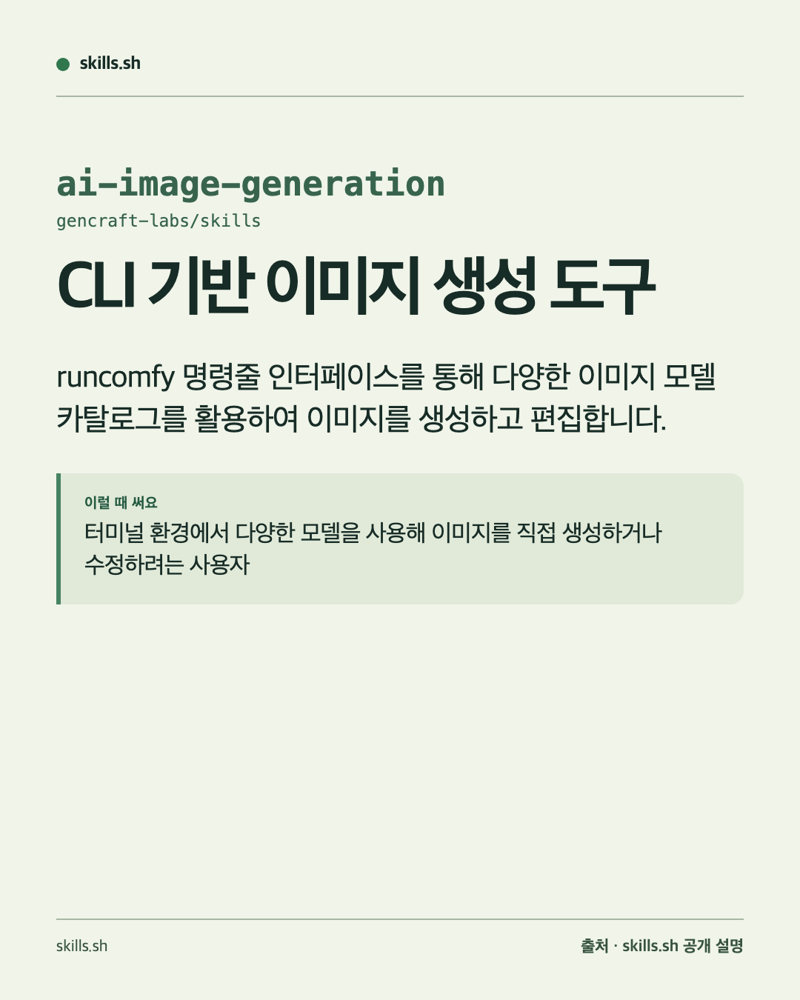

2026-W48 · 2026.11.25 KST 수집
매주 수집한 skills.sh Trending의 최근 24시간 설치 수 순위입니다.

24시간 설치 28,562
inference.sh CLI를 활용해 Google Veo 등 40개 이상의 모델로 AI 비디오를 생성합니다.
영상 제작자가 터미널 환경에서 다양한 최신 AI 모델을 전환하며 비디오를 만들 때 유용합니다.

24시간 설치 28,549
inference.sh CLI를 통해 FLUX, Gemini 등 50개 이상의 다양한 모델로 이미지를 만듭니다.
디자이너나 개발자가 콘솔에서 명령어를 사용해 여러 생성 모델의 결과물을 빠르게 테스트할 때 적합합니다.

24시간 설치 28,548
inference.sh CLI 기반으로 여러 모델을 호출해 말하는 인물 아바타 영상을 손쉽게 제작합니다.
콘텐츠 제작자가 음성과 합성된 인물 안내 영상을 스크립트 기반으로 빠르게 만들고자 할 때 쓰입니다.
24시간 설치 28,547
inference.sh CLI로 트위터 포스트 작성, 좋아요, 리트윗 및 사용자 관리를 자동으로 처리합니다.
소셜 미디어 관리자가 계정 홍보 활동이나 일상적인 게시글 관리를 스크립트로 처리하고자 할 때 유용합니다.
24시간 설치 21,657
AI 에이전트가 페이지 이동, 양식 작성, 버튼 클릭 등 웹사이트 상호작용을 수행할 수 있게 돕습니다.
자동화 시스템을 구축하는 개발자가 웹 화면의 양식 입력과 탐색 작업을 에이전트에게 맡길 때 쓰입니다.

24시간 설치 19,660
Sleek를 활용해 모바일 앱 화면을 디자인 및 편집하고 React Native나 HTML 코드로 구현합니다.
모바일 앱 UI 시안을 빠르게 기획하고 실제 프론트엔드 코드로 변환하려는 개발자

24시간 설치 17,748
사용자의 특정 작업 수행 질문에 맞춰 필요한 에이전트 스킬을 탐색하고 설치하도록 지원합니다.
특정 작업에 알맞은 에이전트 기능을 찾아 즉시 설치하려는 사용자
24시간 설치 16,683
AI 에이전트에 설치하여 활용할 수 있는 ui-taste 스킬 패키지입니다.
24시간 설치 14,935
자연어로 작성된 요구사항을 바탕으로 비즈니스용 웹사이트를 제작하고 호스팅 환경에서 미리 봅니다.
새로운 사업용 홈페이지나 포트폴리오 랜딩 페이지를 빠르게 제작하려는 창업자

24시간 설치 14,799
runcomfy 명령줄 인터페이스를 통해 다양한 이미지 모델 카탈로그를 활용하여 이미지를 생성하고 편집합니다.
터미널 환경에서 다양한 모델을 사용해 이미지를 직접 생성하거나 수정하려는 사용자